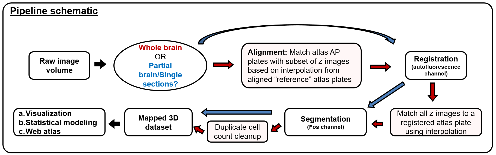

Author(s):
Maintainer: Michelle Jin - smart.r.package@gmail.com - @Michelle_Jin1
Contributor: Joseph Nguyen - jdnguyen@email.wm.edu
This R package builds a pipeline interfacing with the wholebrain package 1 to process whole brain imaging datasets. Datasets of a handful of single slice images across the brain can also be fed into this pipeline. For brevity, I’ll refer to these datasets as partial brains.
There are six main advancements that SMART builds on top of the wholebrain base package:
Guides the user through setting up analysis parameters and feeds the imaging data through registration, segmentation, and forward warp process. It automates looping through these analyses with simple function calls so the user does not have to set up this looping.
Provides a user-friendly interface whenever possible. This includes a console interface during the registration process, that allows for easy adding, changing, and removing correspondence points or reverting back to a previous correspondence change.
Helps to solve non-linear relationships between atlas AP coordinates to actual distances in the anterior-posterior axis in real imaging datasets. This is critical when dealing with tissue clearing methods that cause non-uniform tissue morphing across the AP-axis.
Duplicate cell counts from adjacent z-images are cleaned from the dataset.
Organizes and stores the output of wholebrain analysis in automatically generated subdirectories. This standardized organization will be beneficial when sharing data output from wholebrain.
Provides more ways to parse whole brain datasets and visualize data across ROIs.
Below is an illustratratration of the pipeline schematic: 
If a return value is given by a function, the recommended variable name is indicated in italics in the return section of each function’s help page. If this return value is a required argument for another function in the pipeline, the recommended variable name will also be the same name as the argument.
As illustrated in the schematic, not all parts of this pipeline will be used when analyzing a partial brain. In the tutorial page, functions exclusively meant to be used with whole brain datasets will be marked with (W). Additionally, some package functions may be useful for analysis outside the pipeline we present here. Optional functions that extend the functionality of the base package and don’t need to interface with the pipeline will be marked with (O). They will still be grouped into sections of the pipeline tutorial that contain related functions.
An atlas plate from the Allen Mouse Brain Atlas can be referenced in two different ways: 1) by anterior-posterior coordinate (AP) or 2) plate number. When necessary, most functions will require only AP number to reference an atlas plate. However, there may be a few exceptions where user entry of plate numbers is necessary for convenience. These instances will be explicitly noted in the tutorial.
Disclaimer. This package is intended for coronal plane datasets. Preprocessing must be done to align the dataset coronally before it should be analyzed with the pipeline.
Daniel Furth - @wholebrainsuite (2015). wholebrain: Functions to segment and register cells from microscopic image files with R. R package version 0.1.1.↩